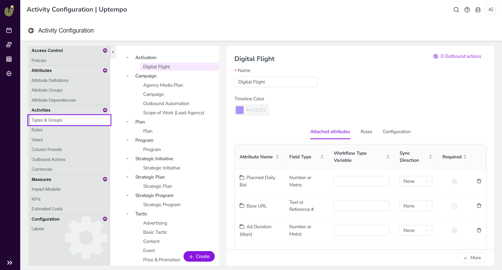
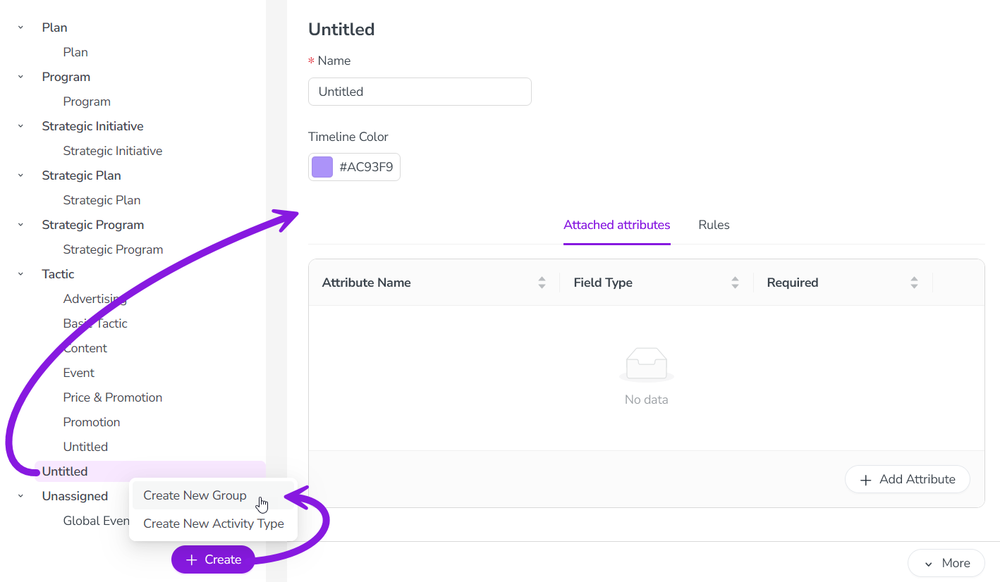

Create activity type groups
You can create activity type groups at any time. However, you can only assign an activity type to a type group (or change the group it is assigned to) if no activities of that type have been created yet. After the first activity of an activity type has been created, you can no longer assign the activity type to a group, or change its group.
Create an activity type group
In the
 Activities section, click
Activities section, click  Settings:
Settings: 
In the Activity Configuration menu, click Activities > Types & Groups.
The Types & Groups section is shown. Any existing activity types and groups are listed in the panel on the left. Settings for the selected activity type or type group are shown in the panel on the right:

At the bottom of the list panel, click + Create, then select Create New Group.
The new group is created with the default name "Untitled", and is added to the bottom of the list panel. It is automatically selected and displayed in the settings panel:

Enter a name for the new activity type group into the Name field.
Optional: On the Attached attributes tab, click + Add Attribute to attach attributes to the activity type group:
In the Add Attribute dialog, select attributes to attach to the type group. Available attributes are organized by attribute type.
Click Add to attach all selected attributes.
The Add Attribute dialog closes, and the selected attributes are displayed in the list on the Attached attributes tab.
For any attached attribute, select the Required option to make the attribute mandatory. If an attribute is set as required, users must set or select a value for it on all activities of the types within this group.
Optional: Set a Timeline Color to configure default color-coding of activities belonging to types in this group in the Timeline display mode. For more details, see Configure Timeline activity color-coding.
All changes are saved automatically, and take effect immediately.
After you have created an activity type group, you can now:
Add activity types to it. For instructions, see Create and configure activity types.
Create activity rules for it. For instructions, see Create activity rules.